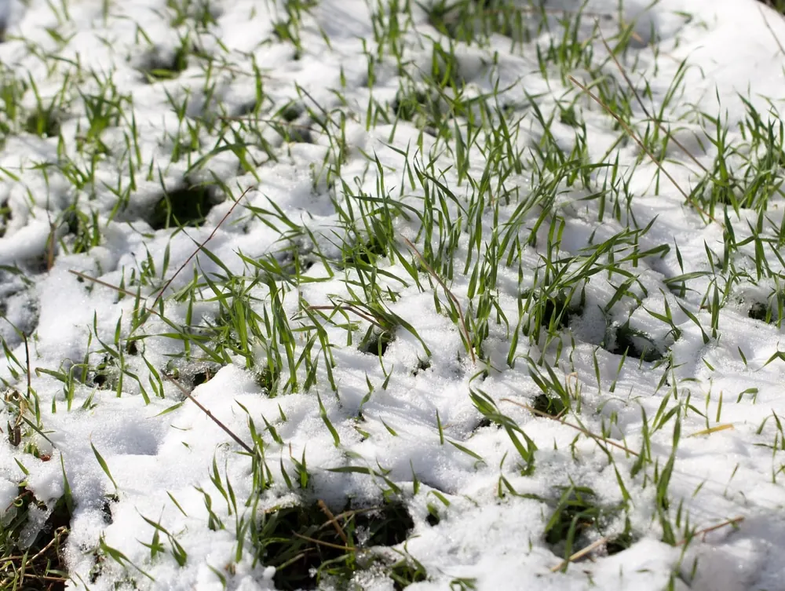

Have you ever looked out at your lawn during the winter and wondered if there’s a way to keep it looking lush during the harsh months? If so, you’re not alone. Many of us could use some tips on winter lawn care but don’t know where to begin.
It can be disheartening to see your once-vibrant green space turn into a barren patch during the colder months. However, there are ways to maintain that luscious look all year round with some smart moves and timely action. We’ll explore those secrets together, including mowing before snowfall, effective fertilization techniques, timely aeration, and more.
Are you ready to become a master of winter lawn care? Your journey starts now.
1. Mow Your Lawn Before Winter
Getting your lawn ready for winter starts with a good mowing. This simple step can set the stage for a lush, healthy yard come springtime.
Cutting your grass short before the cold sets in helps prevent disease and pests from setting up shop during the off-season. But don’t go too low. Scalping your lawn could lead to root damage that’s tough to fix when warmer weather returns.
Pre-Winter Mowing Tips
 To ensure you’re giving your lawn the best shot at winter survival, there are some key things to keep in mind:
To ensure you’re giving your lawn the best shot at winter survival, there are some key things to keep in mind:
- Aim high: Leave about 2-3 inches of height on cool-season grasses like fescue or bluegrass, while warm-season varieties such as Bermuda or Zoysia should be cut down closer to 1 inch.
- Rake it up: Don’t leave leaves scattered around; rake them up! Decaying leaves create a haven for fungi and insects which may harm your turf over time. Learn more about fall leaf cleanup here.
The Right Tools Make All The Difference
No matter what type of grass you have, using sharp mower blades will give you cleaner cuts that help minimize stress on individual plants according to this study by Penn State University Extension. If it’s been a while since they were last sharpened, now might be an excellent time.
When to Mow
Mowing should ideally be done when the grass is dry. This not only helps prevent clumping of cut grass but also lessens the chances of spreading disease.
Keep an Eye on the Weather
Weather plays a crucial role in determining mowing frequency and timing, so keep track. A sudden cold snap can send your lawn into dormancy faster than expected, making that last-minute trim essential.
Key Takeaway: Prep your lawn for winter with a solid mow, but don’t cut too short to dodge root harm. Maintain cool-season grasses at 2-3 inches and warm-season types around 1 inch. Clear away leaves promptly; they can be hotspots for harmful fungi and bugs.
2. Fertilize Your Lawn
Big Easy Lawn Care can help you give your lawn the nutrients it needs to thrive, starting with fertilizer. The secret weapon? Fertilizer. But not just any fertilizer – we’re talking about a slow-release variety specifically designed for winter care.
The magic of slow-release fertilizers is that they feed your grass over time. This means nutrients are delivered at a pace that your lawn can absorb and use effectively, rather than being wasted.
The Right Time to Fertilize
To get the most out of this treatment, timing is key. Fall is ideal because as temperatures drop and lawns start their dormant phase, roots are still active underground. Applying fertilizer in fall allows these busy roots to take up essential nutrients and store them for spring growth.
Finding the Perfect Match
All lawns aren’t created equal – each one has its own specific needs based on soil type and grass species. For instance, St Augustine’s grass thrives on nitrogen-rich feeds while Zoysia prefers phosphorus-heavy mixtures. Aggie Horticulture provides great insights into different types of Southern turfgrasses if you want more info.
A Word of Caution…
While feeding your lawn sounds simple enough, too much love (or in this case fertilizer) isn’t always a good thing. Oversupplying your lawn with fertilizer can have detrimental effects, such as causing too much growth and making it more vulnerable to illness and bugs.
To ensure your lawn stays healthy, it’s essential to be aware of how much fertilizer is required. When in doubt, remember: that less is often more.
3. Aerate Your Lawn
Heavy foot traffic and clay soils can make your lawn feel like it’s gasping for breath. Aerating your lawn is the equivalent of giving it a set of lungs. It helps to reduce compaction, improve drainage, and promote root growth.
Aeration involves creating small holes in the soil surface to allow air, water, and nutrients to penetrate the grassroots. This process will help your roots grow deeply and produce a stronger, more vigorous lawn. Learn how Big Easy Lawn Care does this.
The Importance of Aeration
If you’re looking at your packed-down yard after another New Orleans summer BBQ bash wondering if aerating is really necessary—yes. The answer is yes.
Your turf needs room to breathe, just like we do when dancing at Mardi Gras. Lawns become compacted over time due to heavy use, like garden parties, or natural factors such as rainfall on certain types of soil, such as our local heavy clay.
When To Aerate?
We often get asked: When should I aerate my lawn? Here’s some advice from us.
Fall is usually the best time for newly freed roots to grow before winter. However, keep in mind that the timing may depend on the type of grass.
Tips For Effective Aeration
Before you start poking holes into your backyard with gusto, remember that aeration is a process, not an event. It requires some prep work for the best results.
Here are a few tips from our years of experience: water your lawn thoroughly one or two days before aerating to soften the soil; make sure you cover all areas equally and avoid any newly seeded or sodded areas where the roots may still be shallow.
Key Takeaway: Give your lawn the breath of life by aerating it. This process, which involves making small holes in the soil, lets air, water and nutrients reach grass roots more easily. It’s perfect for reducing compaction and boosting root growth. Ideally done in fall to prepare for winter, remember aeration needs some prep work like watering your lawn before you start.
4. Apply Weed Control
Weeds can be a major problem during the winter months, so it’s important to apply weed control products before the cold weather sets in. Choose a product that is specifically designed for winter use and follow all instructions carefully.
5. Water Your Lawn Regularly
Even though it’s cold outside, your lawn still needs water during the winter months to stay healthy and green. Watering your lawn regularly helps keep it hydrated and prevents it from becoming weak during winter.
6. Protect Your Lawn From Snow Damage
 Snow is a bit like that uninvited party guest. It might look pretty, but leave it unchecked and your lawn will pay the price. The key to preventing snow damage is timely removal. Let’s face it, after a storm has passed through New Orleans, you don’t want an icy layer suffocating your precious grass.
Snow is a bit like that uninvited party guest. It might look pretty, but leave it unchecked and your lawn will pay the price. The key to preventing snow damage is timely removal. Let’s face it, after a storm has passed through New Orleans, you don’t want an icy layer suffocating your precious grass.
To effectively remove any snow accumulation from your lawn quickly and efficiently, tools such as shovels or snow blowers are often necessary. These can help prevent excess weight on the grass blades which can lead to disease outbreaks or bare patches come springtime.
Maintaining Proper Drainage During Winter
Clearing snow promptly after storms is important. It is also crucial to maintain proper drainage during winter to prevent water logging from melting ice and snow.
To prepare for winter, make sure to aerate the soil properly. This will help prevent the formation of soggy lawns caused by melting snow pooling on frozen ground. If you’re unsure about how best to do this for your specific type of grass or soil condition, then reach out – we at Big Easy Lawn Care would be happy to assist.
The Role of Salt In Dealing With Ice And Snow
Using salt to clear pathways around the house can be effective, but it is important to be cautious. Too much salt can harm plant roots by dehydrating them. This might leave your lawn more vulnerable than ever to the cold.
So, when it comes to protecting your lawn from snow damage, remember – quick action after a storm and maintaining proper drainage can make all the difference between lush spring greenery and deal with recovery.
Key Takeaway: Don’t let snow ruin your lawn. Act fast to remove it after a storm, using tools like shovels or snow blowers. Make sure your yard drains well during winter months – aerate the soil before frost hits. Be careful with salt; while it clears pathways, too much can dehydrate plant roots and leave your grass vulnerable.
Tips for Winter Lawn Care FAQs
What should I do to my lawn in the winter?
Mow and fertilize before winter. Aerate your yard, control weeds, water regularly, and protect it from snow damage.
Is it OK to fertilize your lawn in the winter?
Absolutely. Fertilizing in fall or early winter with a slow-release fertilizer prepares your lawn for spring growth.
What should I do to my lawn in November?
In November, mow short one last time. Also, rake leaves, aerate if necessary, apply weed control products, and consider an initial round of fertilizer.
What do you feed your lawn in the winter?
You can feed lawns during colder months using a specialized slow-release granular or liquid “winterize” fertilizer that supports root development without forcing top growth.
Conclusion
Achieving a vibrant and healthy lawn throughout the winter months is not an unattainable dream but a reality within your reach. To protect your lawn during winter and make sure it looks beautiful in spring, use the tips and strategies we’ve discussed. We have given you the information and tools to become skilled at taking care of your lawn during winter. It includes things like mowing before winter, using slow-release fertilizers, and doing aeration and weed control.
At Big Easy Lawn Care, we understand that maintaining a beautiful lawn year-round can be a challenging task. That’s why we’re here to help. Our team of lawn care experts is dedicated to providing the top-notch services your lawn needs to thrive, even during the harshest of seasons.
Don’t let winter dull the beauty of your outdoor space; let Big Easy Lawn Care be your partner in achieving a vibrant, healthy lawn that you can enjoy all year long. Contact us today and embark on your journey towards a stunning winter-ready lawn.